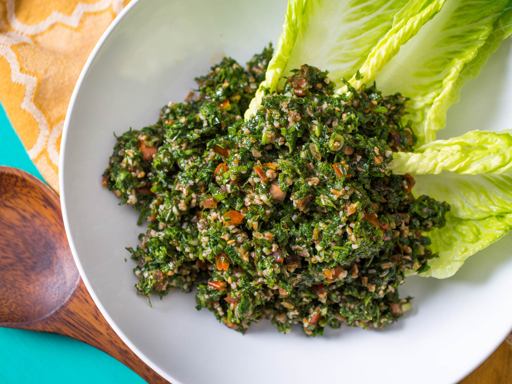
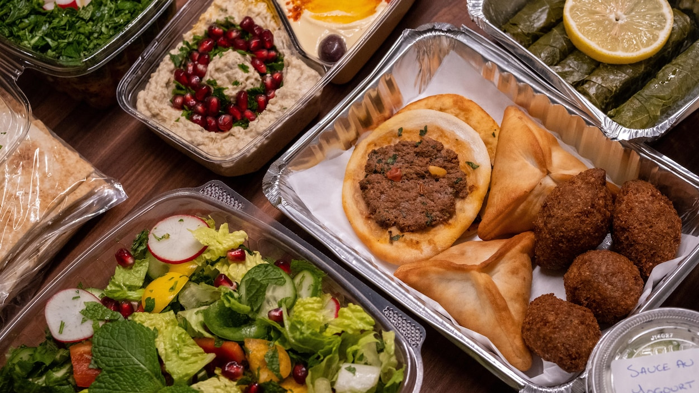
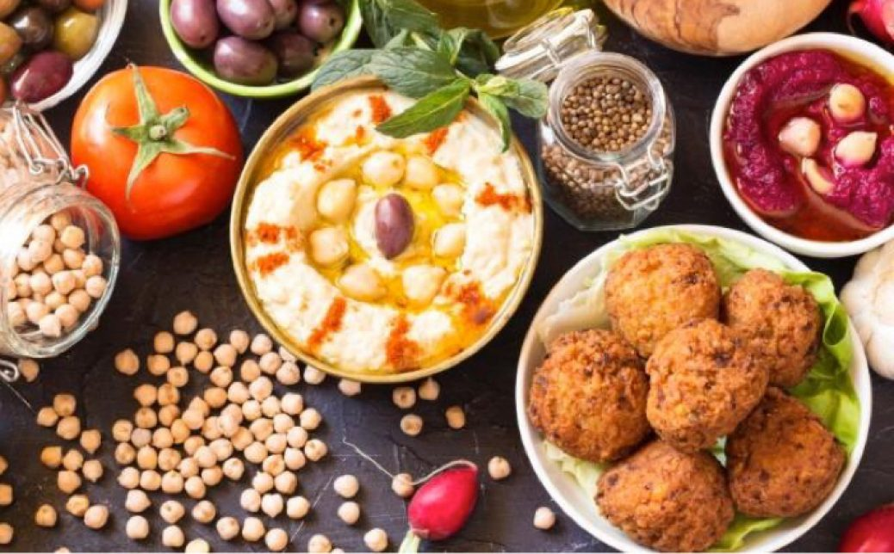

La cuisine libanaise évoque les parfums subtils et délicats de l'Orient. Vous succomberez aux parfums d'une gastronomie réputée fine et délicate, mariage harmonieux d'épices et de saveurs qui feront le bonheur de vos papilles.
Le Liban m'attire et me fascine depuis toujours.
Une identité culturelle à part entière
Le bassin méditerranéen a toujours été une plaque tournante d'échanges commerciaux, culturels, intellectuels mais aussi culinaires. Situé au carrefour de la Grèce, de la Turquie, de la Syrie, d'Israël et de la Palestine, le Liban a concentré au fil des siècles les meilleurs savoir-faire et saveurs de ces pays qui ont marqué son histoire. Il a su créer son propre héritage culinaire qui a contribué à sa réputation. La gastronomie libanaise est à l'image de sa population cosmopolite et voyageuse.
Le taboulé est la salade typique libanaise. elle se compose de persil, de tomates, d'huile dolive et de burghoul.
Kebbé, sambousik et salade fattouche un classique libanais font partie de la gastronomie libanise qui est tres riche en saveurs et en variété.
hummus et falafel un plat populaire au liban, il se trouve sur la plupart des tables autant au restaurant que dans les cuisnes.
